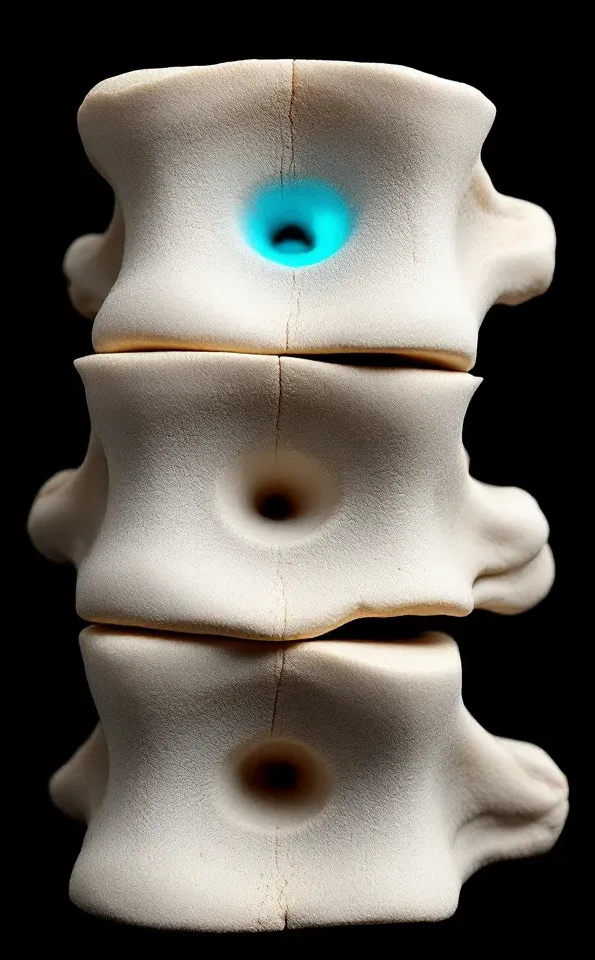
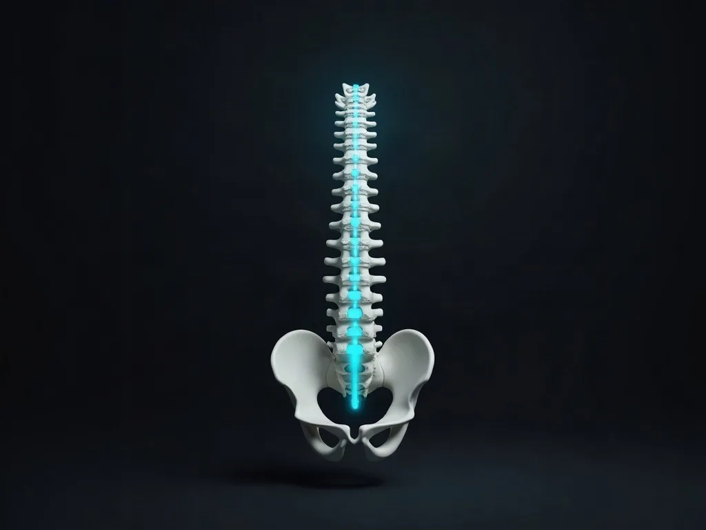
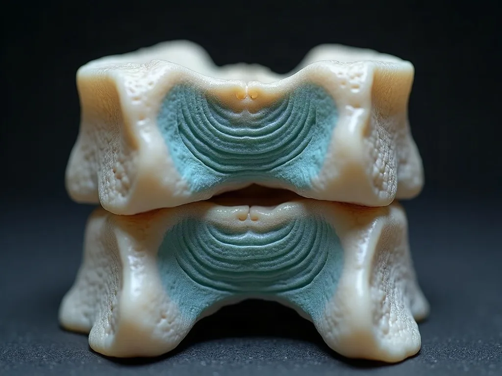

The San Rafael practice for auto-accident injuries that puts the price in writing before it examines you
Most people arrive with the same first question, and it is not a clinical one. It is who is expected to pay for this, and what happens to the bill if the claim does not go their way. Both are answered here before anyone touches you.

This is a chiropractic practice that treats injuries from collisions. It is not an emergency room, not a medical doctor's office and not a law firm. It examines injuries, documents them, and says so plainly when something is outside what it can help with.
Two ways in
I was hurt in a crash
What an examination after a collision actually covers, how the findings are written down, and how the care is funded.
I need to know what this costs
Five ways care after a collision gets paid for, each one set out with who pays, when they pay, and what happens if the claim fails.
Arrived under a different name? This is the auto-injury practice of Pain Relief Clinic of Marin. Same doctor, same address, one file.
The three things people are actually worried about
| What people say | What happens here |
|---|---|
| Nobody will tell me what this costs until after they have my card. | A written Good Faith Estimate is offered before the examination, not after it. You do not have to ask. What the estimate covers. |
| I do not know who is supposed to pay. My insurance, the other driver's, or me. | One page resolves all five routes by name: MedPay, the at-fault driver's liability cover, your own uninsured or underinsured motorist cover, a lien, and self-pay. How care is paid for. |
| What happens to me if the claim fails? | Care here runs on a lien, so nothing is billed to you while the case is open. The terms that apply when it does not pay are set out in full in the next section, not on some other page. |
What is billed, and what is not, in one block
$0 out of pocket to start. The terms that qualify that sentence are printed with it here, because a promise of zero that sends you somewhere else for the conditions is the exact thing this site was rebuilt to stop doing.
- While the case is open
- You are billed nothing, and the practice is paid out of the settlement when it resolves.
- If it does not pay
- If the case is not accepted, is lost, or settles for less than the bill, the balance is written off in full and you owe nothing.
- Before the examination
- You get a written estimate covering what it includes, what would be billed separately, and who owes what.
- Not published
- No rate card, and no per-service price, on this page or anywhere else on this site.
The full arrangement, including all five funding routes and the uninsured-driver case, is on the cost page.
Why the first days matter, and why that is an argument about paperwork
The interval between a collision and the first documented examination shows up in the medical record as a gap. Nothing was measured while the injury was at its worst, so whatever you remember later has to be reconstructed rather than read. That is a fact about how records are read, not a prediction about your claim, and nothing here promises what any claim will do.
New auto-accident patients are seen the same day. That commitment covers new auto-accident patients only, and it is not a general statement about every appointment.
- The whole sequence, in order: the first 72 hours.
- The short version of the same question: the questions people ask.
What people come in with
Each of these has its own page, and each one says what is examined rather than what is promised.
Whiplash
The neck loaded faster than the muscles can control it. Movement measured, not estimated.

Low back pain
What the belt and the seat did, and which structures took it.

Slipped disc
Examined and documented before anything is called a disc injury.
Pinched nerve
Reflex, strength and sensation screened rather than assumed.
Every one of these pages carries the same line, and so does this one: general information, not medical advice. An examination is needed to know whether we can help you.
Why a practice for collisions only
An injury from a crash needs three things at once, and they are not the three a general practice is built around.
- An examination that produces objective findings, which are measurements and test results somebody else can read later.
- A way of funding care that does not require the patient to pay first and argue about it afterwards.
- A written record that still says the same thing when a claim is being reviewed months later.
That is the whole argument. It is a statement about how this practice is organised, not a ranking of anybody else.
Where the reviews are, and whose name they are under
The reviews people find for this practice are filed under Pain Relief Clinic of Marin, held across several separate listings. This site publishes no rating figure and no review total, and emits none in its structured data, because a number shown without saying whose name it sits under is a number you cannot check.
What is published instead is the review text itself, quoted and credited, so you can go and read it where it was written. The person who examines you and writes your record is named too, on the doctor page, with the one registry entry about him that can be looked up.
Individual results vary. These reviews describe one patient's experience and are not a prediction of your outcome.
What this page will not promise you
- No outcome is promised here, and no recovery time is stated anywhere on this site.
- Nothing here predicts what an insurer, an adjuster or a reviewer will decide.
- This is not legal advice and not representation. The practice is not a law firm.
- No figure is published for how many people have been helped, because none could be checked.
And the one thing worth saying about doing nothing: postponing care until the claim resolves is the path that costs most, because the record of an injury is made by treating it rather than by waiting.
If the money question is the one holding you up
There is no published rate card on this site. What exists instead is a written estimate prepared for your own case, and five named routes by which care after a collision actually gets funded.
Every number on this site traces to something you can go and check, and the cost of your care is put in writing before anyone examines you.
Where to start
- Still deciding: what the written estimate covers.
- Directions, published opening hours and what to bring.
- What happens at the appointment: your first visit.